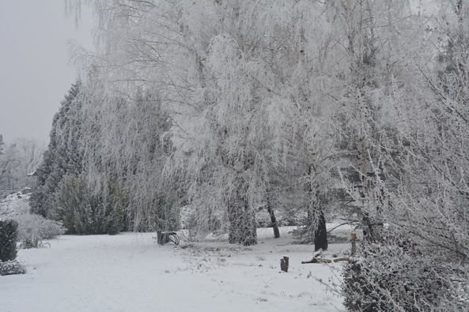
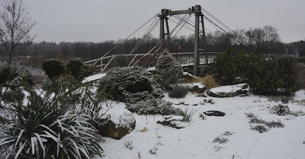
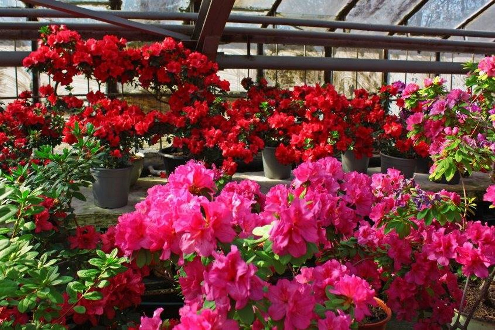

Ботанічний сад в Кривому Розі
-

У багатьох жителів і гостей Кривого Рогу ботанічний сад в першу чергу асоціюються з теплим періодом року, проте насправді і взимку, коли випадає сніг, туди теж дуже навіть варто заглянути.
-
Чудово тихий, покритий білою ковдрою снігу сад, дозволяє зануритися в прекрасний світ, наповнений мріями і яскравими надіями. Іній на деревах і кущах разом з снігом, що випав доповнюють прекрасний зимовий пейзаж.
-

Хтось грає тут з собаками, хтось ліпить сніговиків, а хтось просто гуляє, насолоджуючись свіжим повітрям, чистим снігом і мальовничими пейзажами з пагорбів
-

Якщо ви приїдете в ботанічний сад взимку, вас обов'язково запросять на екскурсію оранжереями і теплицями, які протягом усього року радують око розмаїттям кольорів і чагарників.